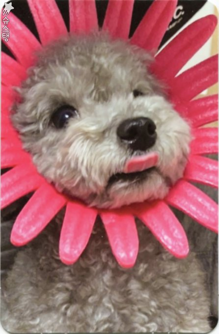

Sobre mi
Me llamo Carlos Catanese, tengo 22 años y soy de Rafaela. Me recibí en 2018 de la Escuela Técnica nº 460 "Guillermo Lehmann" como Técnico en Informática Profesional y Personal.
Hobbies
- Jugar jueguitos
- Aprender idiomas
- Dormir
- Coleccionar cartas
Idiomas
- Español
- Inglés
- Coreano
- Francés
- Alemán
Instagram: @ykhluv
